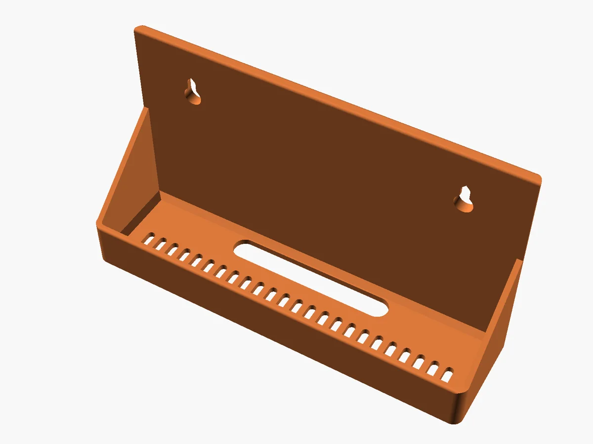

One model. Any box on your wall.
The Holdfast Cradle is a wall mount for routers, power strips, hubs and remotes. Type in your device's size and OpenSCAD rebuilds the whole part: pocket, walls, screw holes, cable cutouts and vents, ready to slice with no supports.
Scroll or pinch to zoom
Pick a starting point, then make it yours.
Each preset is a saved Customizer parameter set in holdfast-cradle.json. The pictures are OpenSCAD renders of the exported STL files, so what you see is the mesh you download.

1 2 3 4 5 6Every feature is a setting.
- Teardrop keyholesHang the cradle on two screws and lift it off again. The holes come to a 45° point on top, so they print clean standing up.
- Cord slotPlugs drop through the floor right against the wall, so cables run down behind the device instead of out the front.
- Vent slotsRows of slots under the device. They size and centre themselves to whatever floor is left.
- Sloped side wallsTall at the back for grip, low at the front so you can reach in. No overhang: the slope is a top surface.
- Front lipKeeps the device from walking forward. Optional U-notch for a cable, and an optional pressed-in label.
- Rounded, chamfered edgesRounded corners and top edges, and a 0.4 mm chamfer on the first layer so elephant's foot doesn't show.
Draw the side view, then extrude it
The back plate, floor, slope and lip are one 2D outline, extruded across the width. Its corners are worked out point by point so faces land exactly where the pocket expects them.
Round it from above, chamfer the base
The extrusion is trimmed by a rounded rectangle, then by a slab that is 0.4 mm smaller at the bed. That gives soft vertical corners and a crisp first layer.
Subtract the pocket and features
The device pocket (with a 45° fillet at the floor), cable notch, vents, cord slot, screw holes and label are cut from that solid. Every cut is its own module.
/* [Device to hold] */ // Device width, left to right (mm) device_width = 120; // [20:1:400] // Device depth, measured out from the wall (mm) device_depth = 40; // [10:1:200] /* [Fit and tolerance] */ // Gap added on every side of the device. 0.6 suits most FDM printers (mm) clearance = 0.6; // [0:0.1:2] /* [Mounting] */ mount_style = "keyhole"; // [keyhole, countersunk, none]
All 35 settings, and what each preset changes.
This table is generated from the Customizer block at the top of the .scad file, so it can't drift from the model. Values marked in orange differ from the default.
| Parameter | What it does | Default | Range | Power strip | Router | USB hub | Remotes |
|---|
Designed for the printer, not just the screen.
The cradle prints the way it hangs: floor down on the bed. These notes explain the choices in the model and give starting settings. They are starting points, not test results.
Orientation
Floor on the bed, back plate standing up. The side walls act as gussets for the back joint, and the 45° fillet inside the pocket adds material where the floor meets the plate.
Overhangs
Nothing needs supports. Holes in the back plate are teardrops with a 45° point, the countersink cone is 90°, the cable notch is round at the bottom, and every slope is a top surface.
Wall thickness
Walls step in 0.4 mm so they come out as whole perimeters with a 0.4 mm nozzle (2.4 mm is six lines). Odd widths leave thin gap fill that's weaker and slower to print.
Tolerance
One number, clearance, is added on every side of the device.
| Fit | clearance | When |
|---|---|---|
| Snug | 0.3 mm | well-tuned printer |
| Standard | 0.6 mm | most printers |
| Easy | 1.0 mm | rubber feet, texture |
Starting slicer settings
PLA softens around 55 to 60 °C, and a router or power brick can keep a closed pocket warm, so PETG or ASA is the safer pick there.
Will it fit your bed?
Worked out from each preset's footprint. "Diagonal" means it fits only when turned 45° on the bed.
Screws
Defaults suit 4 mm (#8 / M4) pan or countersunk screws with a 8.5 mm head. Use wall anchors in drywall. Keyholes keep 1.8 mm of plate in front of the screw head.
Not load-tested. These presets have not been printed or weighed down here, so there's no rated load. Before trusting a printed cradle with something heavy or over a desk, test it with the real device and a margin, and check the screws and anchors suit your wall.
Every export is checked before it ships.
tools/build.py exports each preset and reads the STL back: closed mesh, flat on the bed, and the size the model says it is. tools/test.py also tries settings that should fail.
Exported presets
Guard rails
Settings that would make a broken or unprintable part stop the render with a plain message:
- Side walls taller than the back plate
back_height must be at least 2 mm taller than floor + side_height - Keyholes in a plate too thin to hide the screw head
keyholes need back_thickness of at least 4.5 mm - Screw holes that run past the top or into the floor
screw holes don't fit: raise back_height or lower hole_height - More screws than the width has room for
too many screws for this width - A cable notch wider than the lip
front_notch_width is wider than the front lip
Download, customize, print.
The source and presets are MIT licensed. Open the .scad in OpenSCAD 2021.01 or newer; it uses only built-in features, no libraries.
Make your own size
- Open
holdfast-cradle.scadin OpenSCAD and turn on Window › Customizer. - Pick a preset from the drop-down, or start from the defaults.
- Measure your device and enter width, depth and height. Leave
clearanceat 0.6 the first time. - Press F6 to render, then File › Export › STL.
- Slice floor-down with supports off, and print.
From a terminal, one preset at a time:
openscad -p holdfast-cradle.json -P usb-hub \
-o holdfast-usb-hub.stl holdfast-cradle.scad